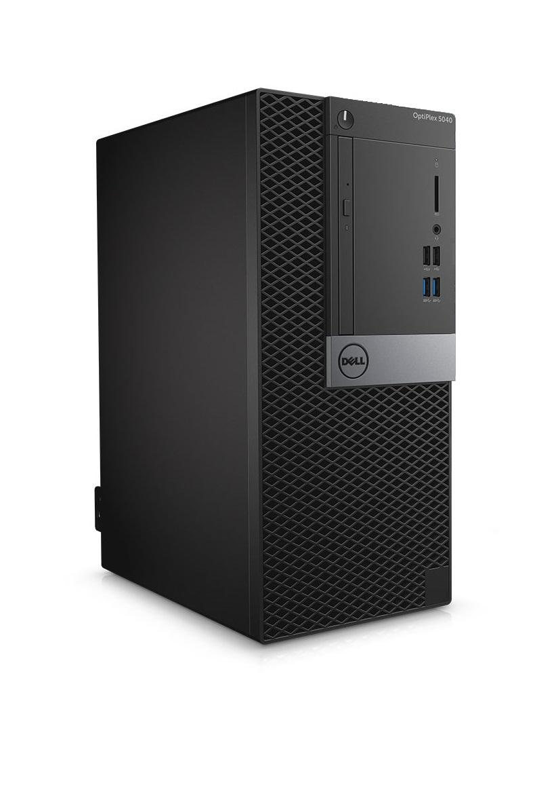
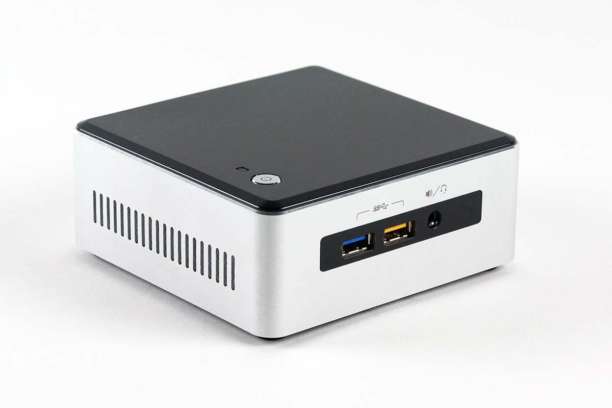
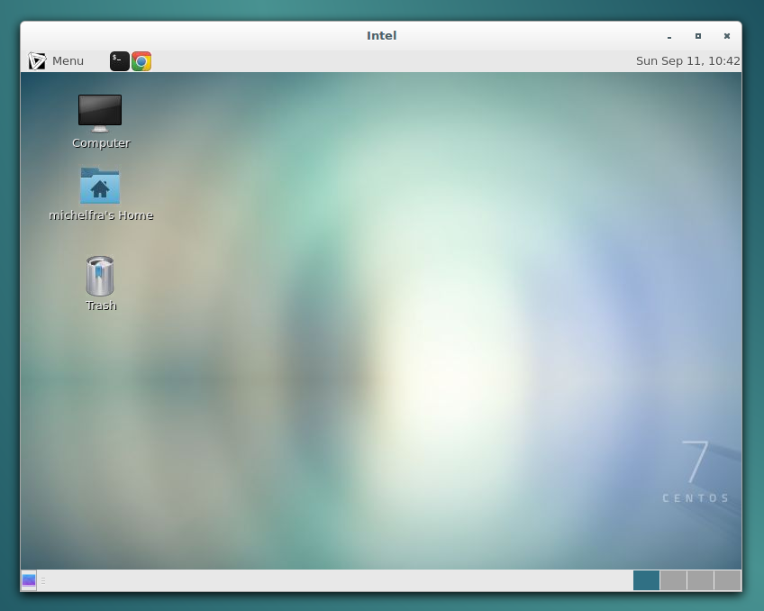

Présentation de l'infrastructure étudiante en INGI
François Michel
Tom Rousseau
Tom Rousseau
Février 2018
Maxime Piraux
Nicolas Rybowski
Nicolas Rybowski
Retrouvez la présentation en ligne
https://ucl-ingi.github.io/presentation-infrastructure/Quelles motivations ?
- Infrastructure vaste et peu connue
- Nombreuses possibilités pouvant vous aider pendant votre cursus
Une source d'information
wiki.student.info.ucl.ac.beRègles d'utilisation
- L'utilisation des salles est soumise à un réglement
- Pour les étudiants INGI
- Dans le cadre de vos études
- Interdiction de manger, boire ou fumer
- Pas d'installation de logiciel sans notre accord
- Pas d'activité illégale
- L'accès à Internet est soumis à la charte UCL et à la politique d'utilisation acceptable de Belnet
- Interdiction de débrancher du matériel
- Interdiction de déplacer du matériel
- Interdiction d'éteindre ou redémarrer du matériel
Le nouveau matériel
Tour Dell
- Intel(R) Core(TM) i7 6700 @ 3.4GHz, 4 coeurs physiques
- 16Go de RAM
- SSD
NUC
- Intel(R) NUC
- Clients légers, terminaux du serveur Jabba.
Les salles informatiques

-
La salle Intel
- 18 tours Dell
- 6 NUCs
-
La salle Siemens
- 9 NUCs
- 8 écrans libres
-
La salle Bill Joy
- 4 NUCs
- 2 écrans libres
- Imprimante StudLP
La liste des machines
La liste des machines est consultable sur le wiki étudiantOS et logiciels
- CentOS 7, kernel 4.14.11
- Bureau MATE
- Tout les logiciels nécessaires pour vos cours
Stockage de données
- Vous disposez d'un répertoire personnel privé, disponible simultanément sur chaque machine.
- Il est soumis à des limites de quota.
- Limite soft à 15 Go
- Limite hard à 18 Go
- Consultable grâce à
quota -ssurjabba
- Pour les fichiers temporaires, le répertoire
/storagevous est accessible. - Il est public, local et non persistent.
Stockage de données
- Votre répertoire personnel INGI est indépendant du répertoire personnel UCL (Oasis).
- Vous pouvez monter le répertoire Oasis avec un raccourci sur le bureau.
Utiliser les machines
- Physiquement, avec votre login INGI
- A distance, avec votre clé SSH INGI
- en ligne de commande via un terminal
- graphiquement via un X2Go
Changer son mot de passe INGI
passwd
Clé SSH INGI
Un tutoriel pour la génération des clés est disponible sur le wiki étudiantConnexion en ligne de commande
- Vous pouvez vous connecter en utilisant
ssh -
Connexion de l'extérieur vers studssh:
-
ssh identifiant_ingi@studssh.info.ucl.ac.be
-
-
Connexion depuis studssh vers une machine de l'infrastructure:
-
ssh identifiant_ingi@nom_de_la_machine.info.ucl.ac.be -
Exemple:
ssh michelfra@skywalker.info.ucl.ac.be
-
Connexion graphique aux machines
Vous pouvez aussi utiliser X2Go pour vous connecter graphiquement aux machines.

Connexion graphique aux machines
Un tutoriel pour l'utilisation de X2Go est disponible sur le wiki étudiantExécuter des tâches de calculs lourds
- Toutes les machines des salles font parties du grid de calcul INGI
- Le grid gère pour vous la répartition de vos tâches sur les machines
- Vous pouvez soummettre vos tâches via
studssh - Des machines haute-disponibilitées sont aussi disponible (H.A.Grid)
- Un tutoriel est disponible sur le wiki
En cas de problème
Contactez nous via request-ingi@student.uclouvain.beMerci de votre attention
request-ingi@student.uclouvain.behttps://ucl-ingi.github.io/presentation-infrastructure/
François Michel
Maxime Piraux